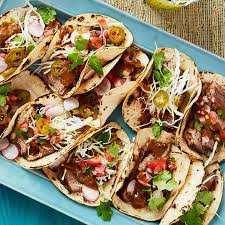

Home
Brisket Tacos

Description
Brisket Tacos are a hearty and flavorful Tex-Mex favorite made with tender, slow-cooked beef brisket.
These tacos are often served in warm corn or flour tortillas and topped with fresh ingredients like
diced onions, cilantro, and a squeeze of lime. The smoky meat, savory seasonings, and fresh toppings
create a satisfying and mouthwatering bite every time.
Ingredients
- 2 cups cooked, shredded beef brisket
- 6 small corn or flour tortillas
- 1/4 cup diced red onion
- 1/4 cup chopped fresh cilantro
- 1/4 cup crumbled queso fresco or shredded cheese (optional)
- Fresh lime wedges (for serving)
- Hot sauce or salsa (optional)
Steps
- Warm tortillas in a dry skillet or microwave until soft and pliable.
- Heat the shredded brisket in a pan or microwave until hot.
- Place a generous amount of brisket in each tortilla.
- Top with diced red onion, chopped cilantro, and cheese if using.
- Serve with lime wedges and hot sauce or salsa on the side.